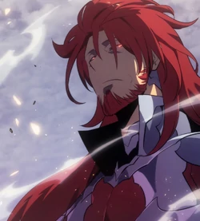

|
Personality Being created to destroy all of existence, Antares reveled in the devastation that he caused with his powers. He also had a very disdainful attitude towards humans and was willing to slaughter them by the millions in order to lure out the Shadow Monarch to face him in battle. Appearance Antares was a handsome middle-aged man with long red hair, a neatly trimmed red beard and glowing red eyes. He also wore silver-red armor with a high collar and a reddish-brown tailcoat. Powers and Abilities
Immense Strength: Antares possessed incomparably immense levels of physical strength. As a testament
to this, he was able to easily hold his own against Jinwoo in their battle and overpower him in
their sword fight.
|

|